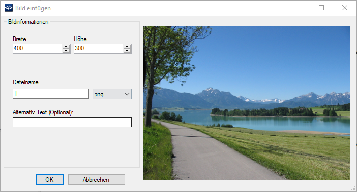

Mit Markdown erstellen Sie die Artikel und können sich auf den Inhalt konzentrieren.
So wird eine Überschrift z.B. so erzeugt:
# Überschrift Ebene 1
Eine Überschrfit auf Ebene 2 wird so erzeugt:
## Überschrift Ebene 2
Dieser Text wird fett und dieser hier kursiv.
Bilder können einfach über die Zwischenablage oder über die Dateiverwaltung eingefügt werden:

Bleiben Sie auf dem Bildlink und Sie erhalten eine Vorschau.
Eine Übersicht über die komplette Syntax finden Sie in der Hilfe.
Sie können jederzeit auch HTML-Code verwenden. Markdown und HTML können gemixt werden.